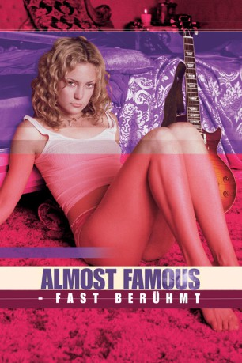

#2915 Almost Famous - Fast berühmt
Alternativ: Almost Famous
Auszeichnungen: 1 Oscars gewonnen für 3 Oscars nominiert 2 GoldenGlobes gewonnen 2 BAFTA-Awards gewonnen
 
 IMDB-Wertung: 7.9 / 10
IMDB-Wertung: 7.9 / 10  Metascore: 90
Metascore: 90 
Almost Famous ist ein autobiographisch inspirierter Spielfilm von Cameron Crowe über einen 15jährigen, der vom Magazin Rolling Stone beauftragt wird, eine Rockband auf ihrer Tour zu begleiten. Groupies, Konzerte und das Leben der Rockstars machen den Film zu einem außergewöhnlich authentischem, wenn auch fiktionalisierten Einblick in eine Subkultur.
Jahr: 2000
Dauer: 161 Minuten
FSK: 12
Land: USA Studio: DreamWorksTonspuren:
Untertitel:
Auflösung: 1080p (1920x1040) Größe: 12595 MB
Genre: Drama, Musik, Komödie, Abenteuer
Regisseur:  Cameron Crowe
Cameron Crowe
Drehbuch: Cameron Crowe
Soundtrack: Nancy Wilson
Darsteller:
 Billy Crudup als Russell Hammond
Billy Crudup als Russell Hammond Frances McDormand als Elaine Miller
Frances McDormand als Elaine Miller Kate Hudson als Penny Lane
Kate Hudson als Penny Lane Jason Lee als Jeff Bebe
Jason Lee als Jeff Bebe Patrick Fugit als William Miller
Patrick Fugit als William Miller Zooey Deschanel als Anita Miller
Zooey Deschanel als Anita Miller Michael Angarano als Young William
Michael Angarano als Young William Anna Paquin als Polexia Aphrodisia
Anna Paquin als Polexia Aphrodisia Fairuza Balk als Sapphire
Fairuza Balk als Sapphire Noah Taylor als Dick Roswell
Noah Taylor als Dick Roswell Philip Seymour Hoffman als Lester Bangs
Philip Seymour Hoffman als Lester Bangs Liz Stauber als Leslie
Liz Stauber als Leslie Jimmy Fallon als Dennis Hope
Jimmy Fallon als Dennis Hope- Olivia Rosewood als Beth from Denver
- Bijou Phillips als Estrella Starr
- J.J. Cohen als Roadie Scully
- Gary Kohn als Roadie Gregg
- Mark Pellington als Freddy
 Eion Bailey als Jann Wenner
Eion Bailey als Jann Wenner Terry Chen als Ben Fong-Torres
Terry Chen als Ben Fong-Torres Rainn Wilson als David Felton
Rainn Wilson als David Felton- Erin Foley als Alison the Fact Checker
 Jay Baruchel als Vic Munoz
Jay Baruchel als Vic Munoz- Pauley Perrette als Alice Wisdom
- Peter Frampton als Reg
 Zack Ward als The Legendary Red Dog
Zack Ward als The Legendary Red Dog- Devin Corey als The Who Road Manager
- Pete Droge als Hyatt Singer
 Eric Stonestreet als Sheldon the Desk Clerk
Eric Stonestreet als Sheldon the Desk Clerk- Marc Maron als Angry Promoter
 John Patrick Amedori als Himself
John Patrick Amedori als Himself- Julia Decker als Waving Girl
- Brian Vaughan als Real Topeka Kid
- Anthony Martelli als Poolside Provocateur
 Kevin Sussman als Lenny
Kevin Sussman als Lenny Tom Riis Farrell als Plaza Doctor
Tom Riis Farrell als Plaza Doctor- Holly Maples als Flight Attendant
- Matt Griesser als PSA Co-Pilot
 Susan Yeagley als Have a Nice Day Stewardess
Susan Yeagley als Have a Nice Day Stewardess Nick Swardson als Insane Bowie Fan
Nick Swardson als Insane Bowie Fan- Michelle Moretti als Swingo's Desk Clerk
- Lisa Buchignani als Arizona Housekeeper
 Dan Andreiu als Concert Goer , uncredited
Dan Andreiu als Concert Goer , uncredited- Mark Cirillo als Bowie Groupie, director's cut only , uncredited
- Emmy Collins als Hotel Loadie , uncredited
 Bodhi Elfman als Alice's Manager, director's cut only , uncredited
Bodhi Elfman als Alice's Manager, director's cut only , uncredited- Mark J. Ferreri als Micheal Creamer , uncredited
 David C. Fisher als Party Guest , uncredited
David C. Fisher als Party Guest , uncredited- Elizabeth Friedman als Groupie , uncredited
 Kyle Gass als Quince Allen, director's cut only , uncredited
Kyle Gass als Quince Allen, director's cut only , uncredited
Datei: X:\2000\Almost Famous - Fast berühmt (2000, FSK12, 1920x1040).mkv seit 31.12.2015
Festplatte: HD 1996-2002
 Es gibt insgesamt 82 Filme in der Gruppe '2000'
Es gibt insgesamt 82 Filme in der Gruppe '2000'